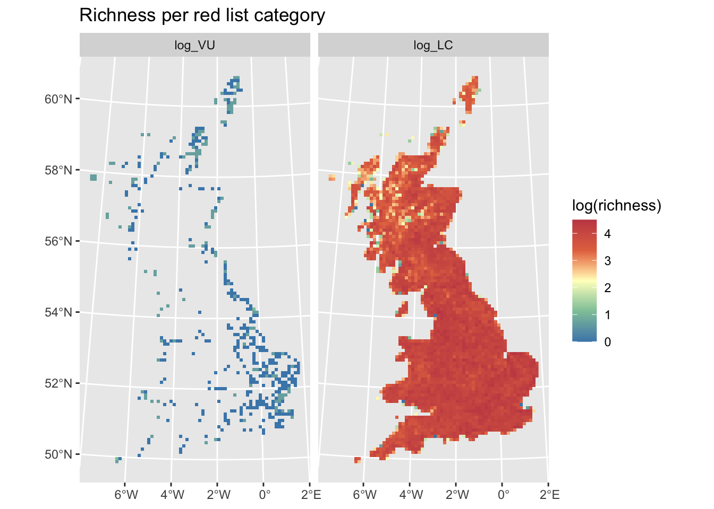
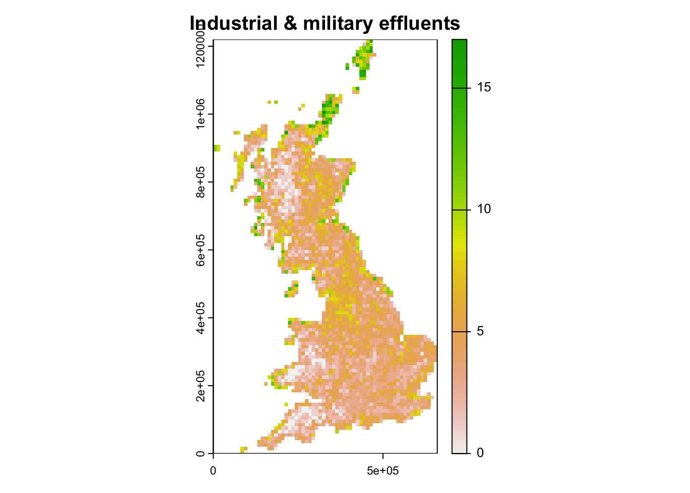

Species threats
RStudio project
Open the RStudio project that we created in the first session. I recommend to use this RStudio project for the entire course and within the RStudio project create separate R scripts for each session.
- Create a new empty R script by going to the tab “File”, select “New File” and then “R script”
- In the new R script, type
# Session a5: Species threatsand save the file in your folder “scripts” within your project folder, e.g. as “a5_SpeciesThreats.R”
The IUCN Red List of threatened species is a useful resource when analysing diversity changes, species range changes and population changes: www.iucnredlist.org (IUCN 2019). It provides information on the global conservation status of species, specifically of animals, fungi and plant species. The IUCN has defined a set of criteria to evaluate the extinction risk of species. According to these criteria, species are classified into nine different categories although strictly only five categories describe the conservation status - from least concern to critically endangered [Fig. 1; IUCN (2012)].
![**Figure 1. The IUCN red list categories. Adapted from [@IUCN2012].**](figures/redlist.png)
Figure 1. The IUCN red list categories. Adapted from (IUCN 2012).
The IUCN distinguishes five criteria that are used to classify species into one of the three threatened categories (Fig. 1; IUCN (2012)):
- A. Population size reduction
- B. Extent of occurrence (B1) or Area of occupancy (B2)
- C. Small population size and decline
- D. Very small or restricted population
- E. Quantitative analysis (probability of extinction within next 100 years)
All of these information (the red list category, the relevant assessment criteria, the population trends, etc.) are provided by the IUCN. We can look at all these information online, e.g. for the Balearic Shearwater.
Of course, if you want to analyse your species data in light of these
IUCN assessments, it can become very tedious to look up all information
by hand. The IUCN red list team provides an API for this purpose, and
the R package rredlist is a client to access this IUCN red list API.
It requires an API
key / a token to use the API. You have to indicate your research
objectives for using the API.
I have got permission to use some red list information for the UK breeding birds in class, but I am not allowed to post them. Thus, course participants can download the data (UK_birds_redlist_status.csv and UK_birds_redlist_threats.csv) in the secured moodle folder (but please be aware that the IUCN terms of use apply!). External readers are advised to generate an API token:
library(rredlist)
# Generate your personal API token
rl_use_iucn()We will work with the UK breeding bird data from practical 3 available here. If not already done so, please download the data and save them in an appropriate folder (e.g. in data folder).
# Read in the distribution dataset:
bird_dist <- read.table('data/UK_BBatlas_2008.csv',header=T, sep=',', stringsAsFactors = F)
# Species names are contained in the columns:
spp <- names(bird_dist)[-c(1:3)]
# For later usage, we need to remove the underscore in the names:
spp <- sub('_',' ',spp)1 IUCN Red list categories
If you have your own IUCN API key, you can easily download the information on species’ red list categories:
# Download red list category for single species using your personal API token "MY_IUCN_REDLIST_KEY"
(rl_search('Gavia stellata', key= MY_IUCN_REDLIST_KEY))## $name
## [1] "Gavia stellata"
##
## $result
## taxonid scientific_name kingdom phylum class order family genus
## 1 22697829 Gavia stellata ANIMALIA CHORDATA AVES GAVIIFORMES GAVIIDAE Gavia
## main_common_name authority published_year assessment_date category
## 1 Red-throated Loon (Pontoppidan, 1763) 2018 2018-08-07 LC
## criteria population_trend marine_system freshwater_system terrestrial_system
## 1 NA Decreasing TRUE TRUE TRUE
## assessor reviewer aoo_km2 eoo_km2 elevation_upper
## 1 BirdLife International Westrip, J.R.S. NA 59900000 500
## elevation_lower depth_upper depth_lower errata_flag errata_reason
## 1 NA NA NA NA NA
## amended_flag amended_reason
## 1 NA NA# Download red list categories for all species
redlist_status <- do.call(rbind,lapply(spp,FUN=function(sp){rl_search(sp, key= MY_IUCN_REDLIST_KEY)$result}))Course participants can download the data from moodle and read it in:
redlist_status <- read.table('data/UK_birds_redlist_status.csv', header=T, sep=',')Here is an example of the kind of information in the table. Compare this to the information given on the IUCN website, e.g. for the Balearic Shearwater.
## authority published_year assessment_date category criteria
## 1 (Pontoppidan, 1763) 2018 2018-08-07 LC <NA>
## 2 (Linnaeus, 1758) 2018 2018-08-07 LC <NA>
## 3 (Pallas, 1764) 2019 2016-10-01 LC <NA>
## 4 (Linnaeus, 1758) 2019 2019-08-11 LC <NA>
## 5 Brehm, 1831 2018 2018-08-07 LC <NA>
## 6 (Linnaeus, 1761) 2018 2018-08-07 LC <NA>
## 7 (Brünnich, 1764) 2018 2018-08-17 LC <NA>
## 8 (Linnaeus, 1758) 2018 2018-08-07 LC <NA>
## 9 (Linnaeus, 1758) 2018 2018-08-10 LC <NA>
## 10 (Linnaeus, 1758) 2019 2018-08-09 LC <NA>
## population_trend marine_system freshwater_system terrestrial_system
## 1 Decreasing TRUE TRUE TRUE
## 2 Decreasing TRUE TRUE TRUE
## 3 Decreasing TRUE TRUE TRUE
## 4 Unknown TRUE TRUE TRUE
## 5 Unknown TRUE TRUE TRUE
## 6 Increasing TRUE FALSE TRUE
## 7 Unknown TRUE FALSE TRUE
## 8 Unknown TRUE FALSE TRUE
## 9 Increasing TRUE FALSE TRUE
## 10 Increasing TRUE TRUE TRUE
## assessor reviewer
## 1 BirdLife International Westrip, J.R.S.
## 2 BirdLife International Martin, R.
## 3 BirdLife International Butchart, S.H.M. & Symes, A.
## 4 BirdLife International Smith, D.
## 5 BirdLife International Hermes, C.
## 6 BirdLife International Westrip, J.R.S.
## 7 BirdLife International Wheatley, H.
## 8 BirdLife International Westrip, J.R.S.
## 9 BirdLife International Hermes, C.
## 10 BirdLife International Westrip, J.R.S.redlist_status[1:10,10:20]1.1 IUCN population trends
We have seen that range size is an important factor for classifying species in a certain red list category. Here, we briefly analyse population trends and range sizes. The necessary information are contained in the red list status data frame. Of course, the extent of occurrance (eoo) specified in the table relates to the global range size of the species. Additionally, you can calculate the range sizes in UK from the available distribution data.
Let’s first look at the relation between population trend and global range sizes (extent of occurrence, EOO).
library(ggplot2)
# area against trend
ggplot(data = redlist_status, mapping = aes(x = population_trend, y = eoo_km2)) + geom_boxplot() + xlab('Population trend') + ylab('Extent of occurrence [km2]')If we want to plot the relation between (global) population trend and British range sizes, we first have to calculate these ranges sizes.
# Calculate British range sizes from the distribution atlas
area <- data.frame(spp=spp, area=colSums(bird_dist[,-c(1:3)]))
# Merge the range size information with the redlist table
area <- merge(area, redlist_status[,c('scientific_name','population_trend','eoo_km2')],by.x='spp',by.y='scientific_name')
ggplot(data = area, mapping = aes(x = population_trend, y = area*100)) + geom_boxplot() + xlab('Population trend') + ylab('Distribution area [km2] in UK')Exercise:
The redlist table also contains information, for example on realm (marine, freshwater, terrestrial) or on elevation/depth.
- Plot the relationship between population trend and range size separately for marine, freshwater, and terrestrial species.
- Plot the relationship between population trend and range size separately for lowland and highland species.
1.2 Mapping hotspots of threatened species
Next, I would like to analyse the distribution of threatened species. We can find the relevant red list information in the data frame on the red list status. Then, we need to combine this red list information with the distribution data. To this end, we will have to extract all species that belong to a specific threat category, then compute the species richness of these species per cell and map this.
For example, we can extract all species that are classified as vulnerable:
(subset(redlist_status,category=='VU')$scientific_name)## [1] "Branta ruficollis" "Aythya ferina" "Rissa tridactyla"
## [4] "Fratercula arctica" "Streptopelia turtur"Using the red list information we can then map hotspots of species, meaning the species richness of species falling into different red list categories.
library(terra)
library(tidyterra) # for mapping
# The coordinate reference system for the UK National Grid is:
proj_UK <- '+proj=tmerc +lat_0=49 +lon_0=-2 +k=0.9996012717 +x_0=400000 +y_0=-100000 +ellps=airy +datum=OSGB36 +units=m +no_defs'
# Identify all vulnerable species
vu_spp <- subset(redlist_status,category=='VU')$scientific_name
# We have to make sure that species names are written in the same way in the redlist and distribution data
vu_spp <- sub(' ','_', intersect(vu_spp,spp))
# Identify all least concern species
lc_spp <- subset(redlist_status,category=='LC')$scientific_name
lc_spp <- sub(' ','_', intersect(lc_spp,spp))
# Now, we extract the distribution data for the VU and LC species groups, make SpatRasters and stack these
spp_maps <- c(
terra::rast(data.frame(bird_dist[,2:3], log_VU=log(rowSums(bird_dist[,vu_spp]))), crs=proj_UK, type='xyz'),
terra::rast(data.frame(bird_dist[,2:3], log_LC=log(rowSums(bird_dist[,lc_spp]))), crs=proj_UK, type='xyz'))
# Plot the maps
ggplot() +
geom_spatraster(data = spp_maps) +
facet_wrap(~lyr, ncol = 2) +
scale_fill_whitebox_c(
palette = "muted"
) +
labs(
fill = "log(richness)",
title = "Richness per red list category"
)
Exercise:
Map species richness of all species belonging to the threatened categories (CR, EN, VU) and species richness of all species belonging to the non-threatened categories (NT, LC).
- Discuss the patterns. Where are hotspots of threatened species?
2 Red list threats
The IUCN also assesses the main threats per species as you saw in the Balearic Shearwater example. The Threat Classification Scheme can be found here.
If you have your own IUCN API key, you can easily download the information on species’ red list threats:
# Download red list threats for single species
rl_threats('Gavia stellata', key= MY_IUCN_REDLIST_KEY)## $name
## [1] "Gavia stellata"
##
## $result
## code title timing
## 1 11.1 Habitat shifting & alteration Future
## 2 3.3 Renewable energy Ongoing
## 3 4.3 Shipping lanes Ongoing
## 4 5.4 Fishing & harvesting aquatic resources Ongoing
## 5 5.4.4 Unintentional effects: (large scale) [harvest] Ongoing
## 6 9.2 Industrial & military effluents Ongoing
## 7 9.2.1 Oil spills Ongoing
## scope severity score invasive
## 1 Majority (50-90%) Negligible declines Low Impact: 3 NA
## 2 Minority (<50%) Unknown Unknown NA
## 3 Minority (<50%) Negligible declines Low Impact: 4 NA
## 4 Minority (<50%) Negligible declines Low Impact: 4 NA
## 5 Minority (<50%) Negligible declines Low Impact: 4 NA
## 6 Minority (<50%) Slow, Significant Declines Low Impact: 5 NA
## 7 Minority (<50%) Slow, Significant Declines Low Impact: 5 NA# Download red list threats for all species
redlist_threats <- do.call(rbind,lapply(seq_len(length(spp)),FUN=function(i){xi <- rl_threats(spp[i], key= MY_IUCN_REDLIST_KEY); if(length(xi$result)) {data.frame(species=spp[i],xi$result) }}))Course participants can download the data from moodle and read it in:
redlist_threats <- read.table('data/UK_birds_redlist_threats.csv', header=T, sep=',')The threats are ordered hierarchically from broad threat type to very detailed threat, e.g.:
- 2 Agriculture & aquaculture > 2.2 Wood & pulp plantations > 2.2.1 Small-holder plantations
- 5 Biological resource use > 5.4 Fishing & harvesting aquatic resources > 5.4.3 Unintentional effects: subsistence/small scale (species being assessed is not the target)[harvest]
Here is an example of the kind of information in the table. For more details, please have a look at the IUCN website, e.g. the Balearic Shearwater example, and at the Threat Classification Scheme.
redlist_threats[sample(nrow(redlist_threats),10),-c(1:2)]## title timing
## 576 Intentional use (species is the target) Ongoing
## 726 Livestock farming & ranching Ongoing
## 716 Unintentional effects (species is not the target) Ongoing
## 571 Agro-industry grazing, ranching or farming Ongoing
## 544 Roads & railroads Ongoing
## 32 Invasive non-native/alien species/diseases (Unspecified Rattus) Ongoing
## 240 Abstraction of surface water (unknown use) Ongoing
## 202 Invasive non-native/alien species/diseases (Perca fluviatilis) Ongoing
## 436 Invasive non-native/alien species/diseases (Neovison vison) Ongoing
## 62 Agricultural & forestry effluents Ongoing
## scope severity score
## 576 Minority (<50%) Slow, Significant Declines Low Impact: 5
## 726 Majority (50-90%) Slow, Significant Declines Medium Impact: 6
## 716 Minority (<50%) Negligible declines Low Impact: 4
## 571 Majority (50-90%) Slow, Significant Declines Medium Impact: 6
## 544 Minority (<50%) Causing/Could cause fluctuations Low Impact: 5
## 32 Minority (<50%) Negligible declines Low Impact: 4
## 240 Majority (50-90%) Negligible declines Low Impact: 5
## 202 Minority (<50%) Negligible declines Low Impact: 4
## 436 Minority (<50%) Slow, Significant Declines Low Impact: 5
## 62 Minority (<50%) Slow, Significant Declines Low Impact: 5
## invasive
## 576 <NA>
## 726 <NA>
## 716 <NA>
## 571 <NA>
## 544 <NA>
## 32 Unspecified Rattus
## 240 <NA>
## 202 Perca fluviatilis
## 436 Neovison vison
## 62 <NA>We can extract many useful information from this table, for example, when specific threats occurred.
table(redlist_threats$timing)##
## Future Ongoing Past, Likely to Return
## 58 750 18
## Past, Unlikely to Return
## 8Exercise:
Explore the threats table. For example,
- Pick a species and identify which threats are causing rapid declines and slow declines.
2.1 Mapping hotspots of threats
We can also analyse the spatial distribution of threats. To do so, we need to extract the species that are affected by a particular threat in a particular time period. Then we can extract the distribution data for these species, compute the species richness and map this in space.
# Which ongoing threats are the most common ?
sort(table(subset(redlist_threats, species %in% spp & timing=='Ongoing')$title), decreasing=T)[1:10]##
## Hunting & trapping terrestrial animals
## 63
## Intentional use (species is the target)
## 40
## Industrial & military effluents
## 26
## Agricultural & forestry effluents
## 24
## Annual & perennial non-timber crops
## 23
## Unintentional effects: (large scale) [harvest]
## 23
## Agro-industry farming
## 21
## Fishing & harvesting aquatic resources
## 21
## Renewable energy
## 21
## Herbicides and pesticides
## 20# Identify the species experiencing threats from hunting
spp_threat1 <- sub(' ','_',subset(redlist_threats,title=="Hunting & trapping terrestrial animals" & species %in% spp)$species)
# Identify the species experiencing threats from industry and military
spp_threat2 <- sub(' ','_',subset(redlist_threats,title=="Industrial & military effluents" & species %in% spp)$species)
# Map species experiencing threats from hunting
plot(terra::rast(data.frame(bird_dist[,2:3],rowSums(bird_dist[,spp_threat1])), crs=proj_UK, type='xyz'), main="Hunting & trapping terrestrial animals")# species experiencing threats from industry and military
plot(terra::rast(data.frame(bird_dist[,2:3],rowSums(bird_dist[,spp_threat2])), crs=proj_UK, type='xyz'), main="Industrial & military effluents")
Exercise:
- Pick two other ongoing threats and map the species richness of those breeding birds affected by these threats.
- Pick a future and a past threat and map the species richness of those breeding birds affected by these threats.
Interpret.